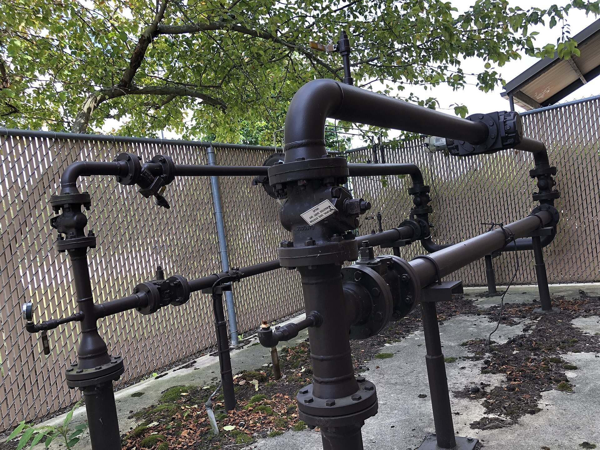

Oʻzbekistonda gaz eksporti 34,8% kamaydi, import 15% oshdi
2026-yil yanvar–avgustda gaz eksporti 322,3 mln dollarga tushdi, import esa 1,22 mlrd dollarga yetdi. Qiymat jihatidan Oʻzbekiston eksport qilganidan qariyb toʻrt baravar koʻp gaz import qildi; ichki ishlab chiqarish 16,3% kamaydi.

Oʻzbekistonning tabiiy va ishlangan gaz eksporti 2026-yil yanvar–avgust oylarida bir yil avvalgi davrga nisbatan 34,8% kamayib, 322,3 million dollarni tashkil etdi. Shu bilan birga gaz importi 15,2% oshib, 1,22 milliard dollarga yetdi. Bu haqda Statistika qoʻmitasi maʼlumotlariga tayangan holda xabar berildi.
Eksport va import
Qiymat jihatidan Oʻzbekiston eksport qilgan gazdan qariyb toʻrt baravar koʻp gaz import qildi. Importning 124,3 million dollari suyultirilgan gazga, jumladan propanga toʻgʻri keladi — bu turdagi import qariyb 3,5 baravar oshgan. Mamlakat gazni Xitoyga sotishda davom etmoqda, ayni paytda ichki ehtiyojlarni qoplash uchun Rossiya va Turkmanistondan gaz olib kelmoqda.
Ishlab chiqarish pasaymoqda
Eksportning qisqarishi ichki ishlab chiqarishdagi muammolar bilan bogʻliq: yanvar–avgustda tabiiy gaz qazib olish 16,3% kamayib, 24,2 milliard kub metrni tashkil etdi (oʻtgan yili shu davrda — 28,9 milliard kub metr). Hukumat avgust oyida sanoat quvvatlarining kengayishi va aholining oʻsishi tabiiy gaz hamda neft mahsulotlariga talabni oshirayotganini, mavsumiy isteʼmol esa qoʻshimcha bosim yaratayotganini bildirgan edi.
Yangi konlar va sarmoya
Yil boshidan buyon beshta gaz koni topilgan va 80 ta quduq burgʻilangan; toʻrtinchi chorakda yana 40 ta quduq burgʻilash rejalashtirilgan. 2026-yil mayda BP kompaniyasi Ustyurt mintaqasidagi qidiruv loyihasida 40% ulushni qoʻlga kiritdi; «Oʻzbekneftegaz» va SOCAR har biri 30% ulushga ega, SOCAR esa operator hisoblanadi. Kompressor stansiyalarida elektr dvigatellarini yangilash yiliga qariyb 125 million kub metr gazni tejash imkonini berishi kutilmoqda.